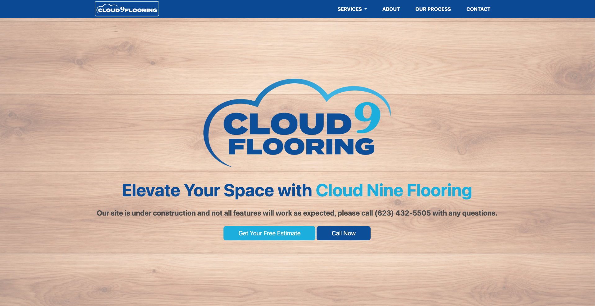
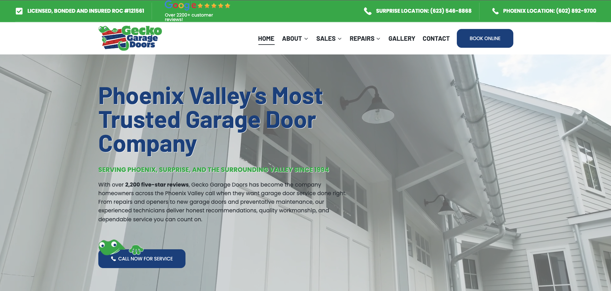

Verity Snapshot
Two businesses. Two different visibility jobs.
This Snapshot looks at Cloud 9 Flooring and Gecko Garage Doors through one lens: what a first-time customer can understand, trust, and do next from the public web presence.
Website view
Side-by-side website snapshot

Cloud 9 Flooring
The visible homepage presents the Cloud 9 brand clearly, states that the site is under construction, and offers estimate and call buttons.

Gecko Garage Doors
The visible homepage includes licensing, review proof, locations, service positioning, a booking path, and a clear call-to-service button.
Two visibility jobs
The useful question is what each business needs next.
Cloud 9 picture
Cloud 9 needs launch clarity.
Cloud 9 already has a recognizable brand, product direction, and direct estimate/call actions. The public issue is that the site still feels unfinished in important places, so a new flooring customer may not yet have enough confidence to understand the offer, trust the company, and request an estimate.
- Finish the incomplete public story: about, process, service area, and core flooring pages.
- Clarify what kind of flooring work Cloud 9 wants most: replacement, install, product selection, repair, or full project guidance.
- Add flooring-specific proof that helps a homeowner trust the estimate path.
- Make the first visit feel intentionally launched, not temporarily under construction.
Gecko picture
Gecko needs mature-business optimization.
Gecko already presents as an established garage-door company with licensing, reviews, locations, service categories, and action paths. The opportunity is different: make the strongest proof easier to scan, make service choices simpler, and prepare the site for how search and AI systems summarize local businesses.
- Prioritize the proof hierarchy so the strongest trust signals appear in the right order.
- Clarify service paths for repair, sales, installation, and emergency or urgent needs.
- Strengthen local-area and location signals without making the page feel crowded.
- Check whether the public site gives AI/search systems a clean, accurate summary of Gecko.
Shared-owner learning
There may be useful visibility discipline inside Gecko that can inform Cloud 9, especially around proof, service clarity, and action paths. But this Snapshot should not treat Gecko as the template. Each business needs its own scan, its own buyer journey, and its own priority fix list.
What a full Verity Scan would answer
Before fixing, decide what matters.
- What should Cloud 9 finish first so the business feels ready and trustable online?
- Which proof signals matter most for flooring buyers before they request an estimate?
- Where is Gecko's public story already strong, and where is it still harder to scan than it should be?
- What mature-business optimization opportunities still exist for Gecko's own visibility system?
- How clearly do both brands describe themselves to search and AI systems, so public information gives a clearer, more accurate picture of each business?
Recommended next step
Confirm Cloud 9's current website status with Preston, then use a short Verity Scan conversation to identify each brand's first priority, decide whether to scan one brand first or both separately, and define the next visible fixes.
What we looked at
Public pages and channels reviewed
- Cloud 9 homepage, plus Cloud 9 About, Process, LVP, Carpet, Hardwood, Laminate, and Tile pages.
- USCorpDirectory company listing showing Cloud Nine Flooring LLC with Preston Hiller as registered agent.
- Gecko Garage Doors homepage.
- Gecko Facebook page and Gecko Yelp profile, both linked from the Gecko site footer.
- Gecko BBB profile naming Preston Hiller as owner/customer contact.
- Lifted podcast listing describing Preston's Gecko operating story.